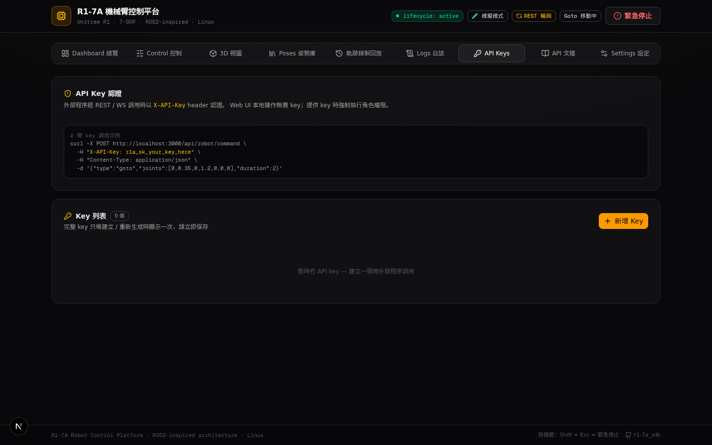

08 · OPEN API
18
個 REST 端點 ·
3
個 WS Topics
把機械臂變成任何系統都可調用的服務
terminal
REST — 帶金鑰下指令
curl -X POST
http://host:3000/api/robot/command
-H
"X-API-Key: r1a_sk_…"
-d
'{"type":"goto","joints":[0.5,0.1,-0.8,0.55,0,0,0.3]}'
podcasts
WS — 訂閱遙測流
socket.emit
(
'subscribe'
, { topics: [
'/joint_states'
] })
// 實測 ≈
9.6 Hz
串流
category
robot / poses / trajectories / keys / system
五組資源
vpn_key
r1a_sk_
前綴 · 一次性完整顯示 · 掩碼存儲
autorenew
重新生成 · 啟用開關

key
API Keys 管理台
viewer
→
唯讀遙測/查詢
operator
→
運動指令 + 姿勢/軌跡執行
admin
→
全部含
zero_torque / reset